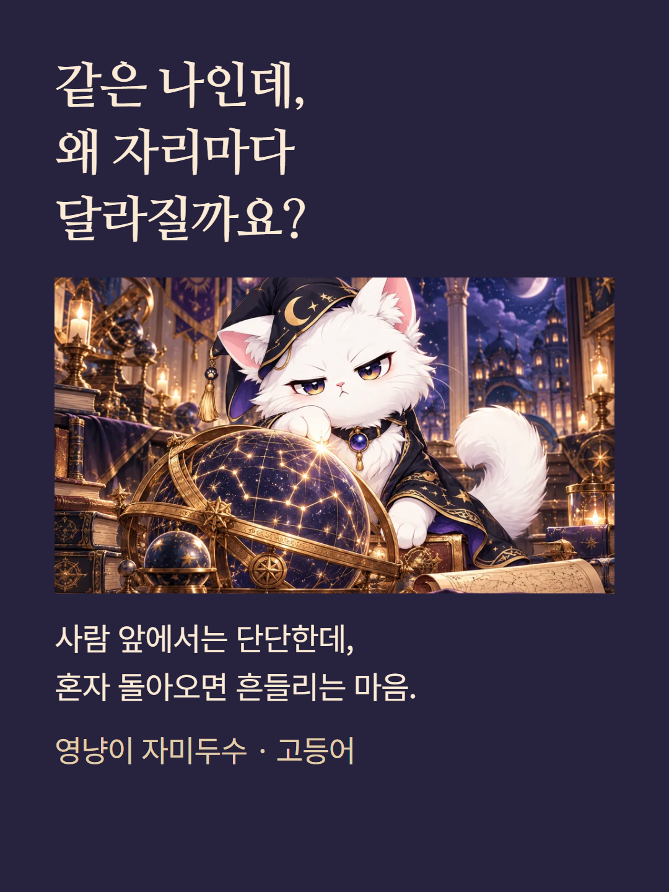
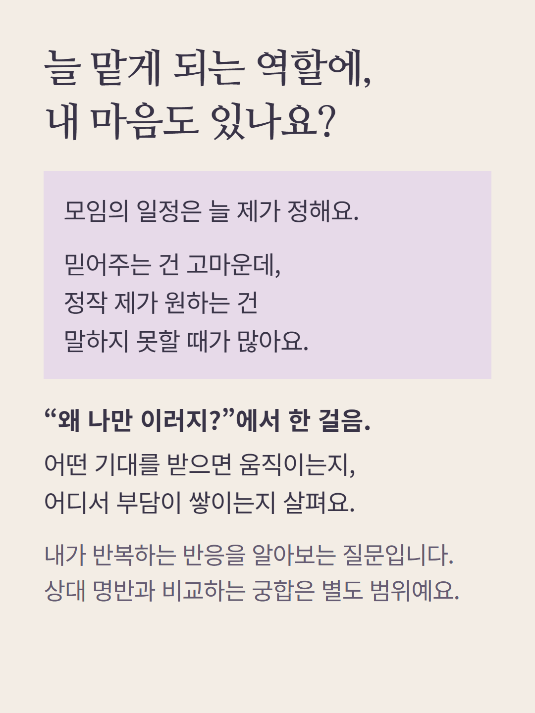
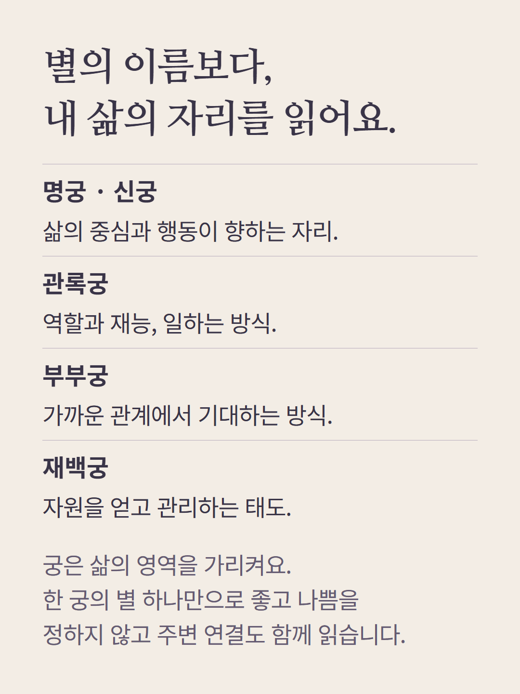
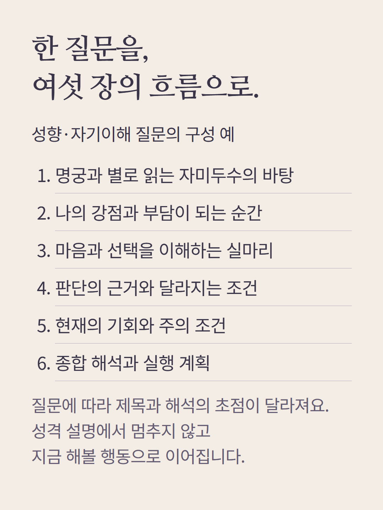
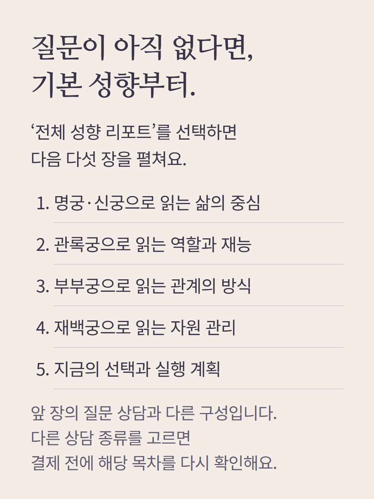
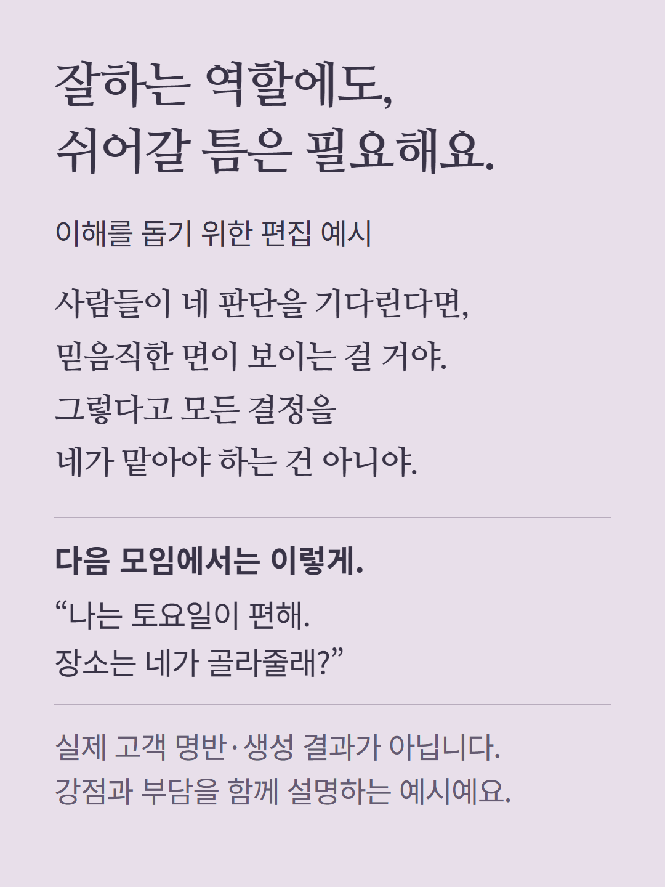
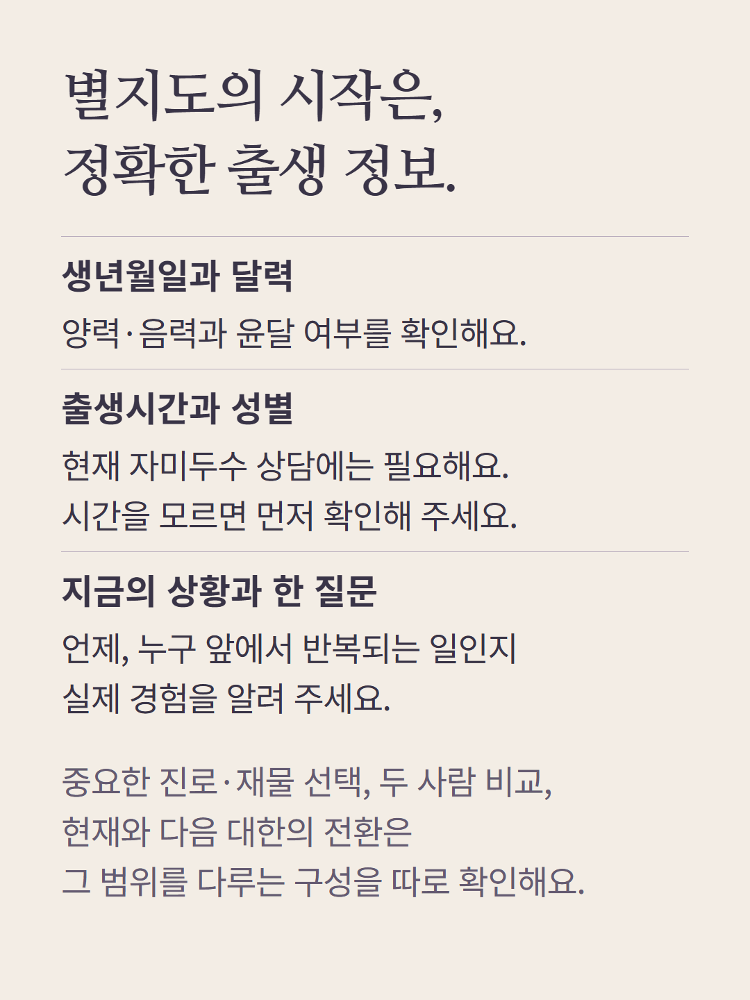
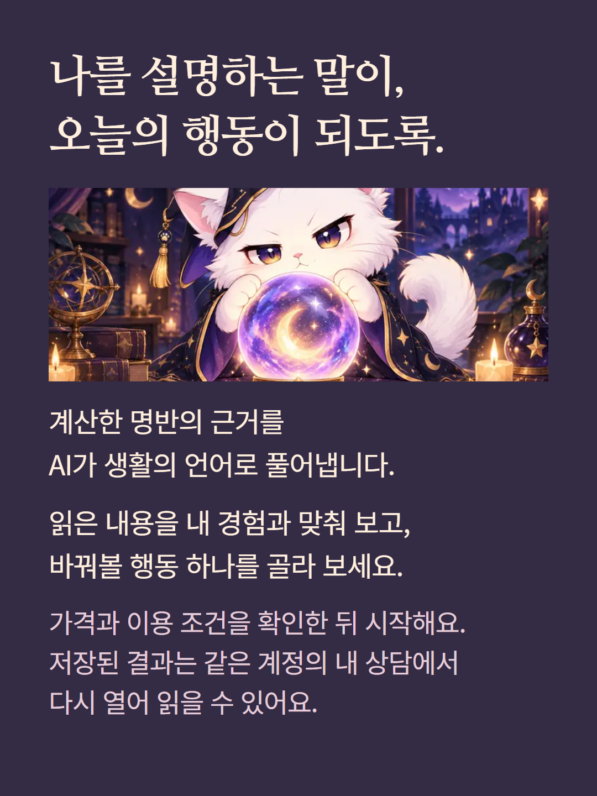

자미두수 고등어 질문 상담은 일상과 개인의 관계 고민 한 가지를 다룹니다. 질문 상담 6장과 질문 없이 고르는 기본 성향 리포트 5장은 서로 다른 구성입니다. 주제에 따라 목차가 바뀌며 궁합 비교나 장기 대한 상담이 자동 포함되지 않습니다. 출생시간과 성별이 필요합니다. 안내의 해설은 편집 예시이며 실제 고객 명반이나 결과가 아닙니다. 계산 근거를 바탕으로 AI가 작성하며, 가격과 추가 질문 조건은 상담 준비 화면에서 확인합니다.